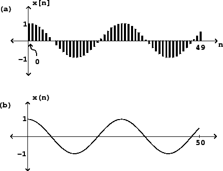

If you recall from a previous class on sinusoids:
digital signals are sequences that are indexed by
n, which is called the sample numbern, and to obtain the actual values of for these indices, we need a function, call itf, of the sample number.
Now, because we are inside a computer, this sequence is slightly different:
..., x[n-2], x[n-1], x[n], x[n+1], x[n+2], ...The notation x[n] means that our digital signal is
stored inside the computer on a portion of the memory of the computer,
ie. an array, that is named x, and we call
elements of that array by the index n, which is our sample
number.
Here's an image that displays such array of 50 samples (indexed from 0 to 49):

Part b of the picture represents a continuous version of the same digital audio signal. This is important to note: digital audio signals are discrete, ie not continuous, because computer memory is also discrete.
This of course brings out a plethora of problems because sound is a continuous phenomenon, but this is a story for another time, and a problem that can be approached using algebra and discrete mathematics...
The digital audio signal, then, is obtained from two processes: